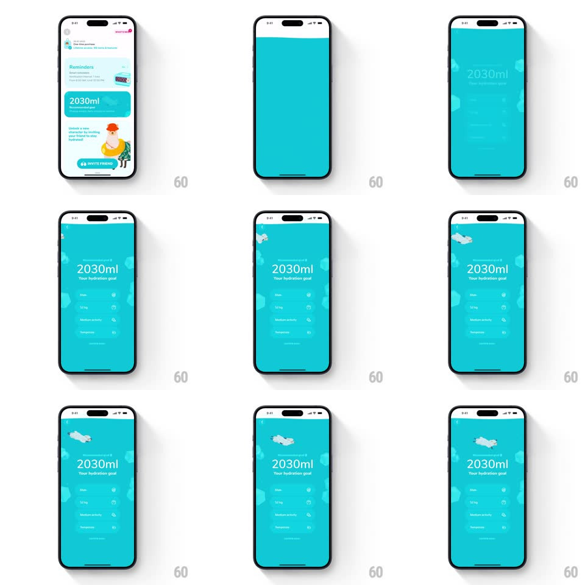

Media
Frame-by-frame

Rebuild this interaction 1:1: Waterllama's recommended-goal reveal - a teal liquid wave rises from the bottom and floods the settings screen, surfacing your personalized hydration goal.

Rebuild this interaction 1:1: Waterllama's recommended-goal reveal - a teal liquid wave rises from the bottom and floods the settings screen, surfacing your personalized hydration goal. ## Integration Integration: stack-agnostic spec - springs given as stiffness/damping, timed motions as duration + curve; map every value to your framework and animation library of choice. ## Scene The settings screen (Reminders card, 2030ml goal card) is swallowed by rising teal water. Behind the surface, the goal screen emerges: "2030ml / Your hydration goal" in white, a small profile summary with rows (Male, 52 kg, Moderate activity, 500ml) as quiet white-on-teal rows, and little white clouds drifting near the top. ## Motion spec Pattern: full-screen liquid fill transition. - The fill: teal water rises from the bottom edge (800ms, ease-in), its surface a pronounced wave (amplitude 12px, wavelength ~screen width, traveling) with white foam bubbles popping along the crest. - The new screen's content is revealed BY the waterline: elements appear as the wave passes over them (clip masked to the surface), so text and rows seem to float up out of the water. - Once the screen is full, the surface settles at the top with a final slosh (tilt +-3deg, spring ~300/14, 600ms) and disappears; 3-4 small clouds drift in from the sides (translateX, 600ms, staggered 150ms) and bob on slow loops (translateY +-5px, 3-5s). - The goal number counts up to the final value (0 to 2030, 900ms, ease-out) as the water settles; a few bubbles continue rising through the teal background indefinitely. - Reverse (save/back): the water drains downward with the same wave, un-revealing back to settings. ## Calibration - One flat teal fills everything; white is the only other color (text, clouds, foam). - The wave must stay lively during the whole rise - a straight fill line kills the effect. ## Reduced motion Vertical wipe replaces the wave; number counts without bubbles. ## Don't miss - The content is masked by the waterline, not faded in after - the reveal IS the wave. - Clouds are small and sparse (3-4), floating only in the top quarter.